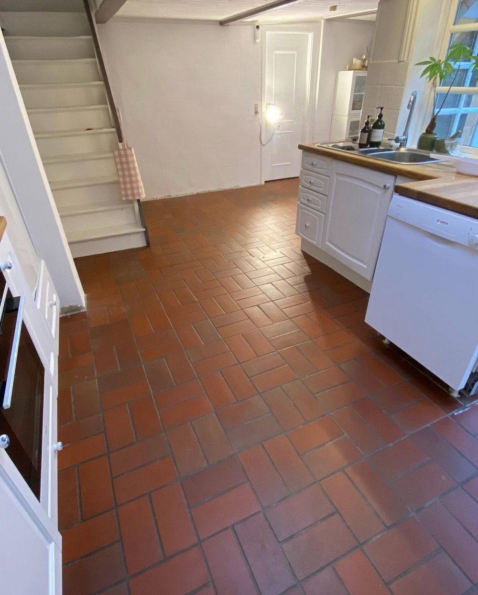
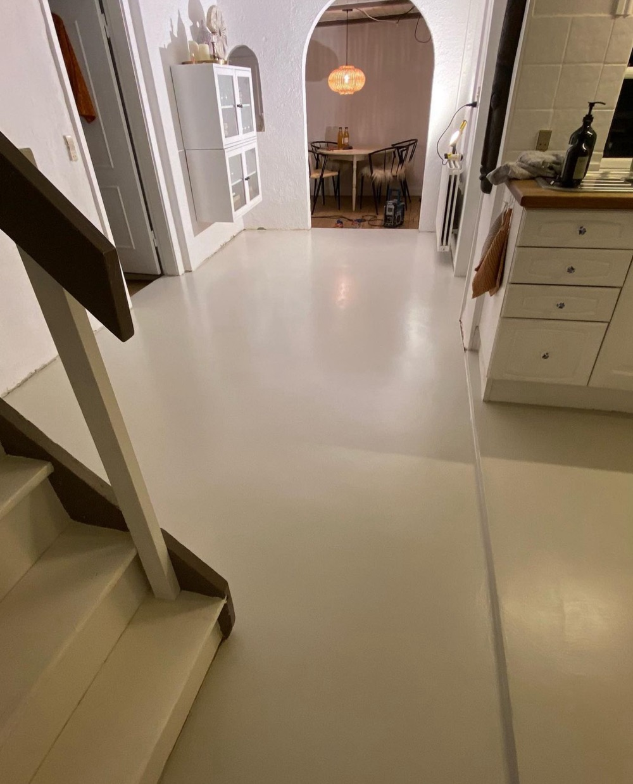
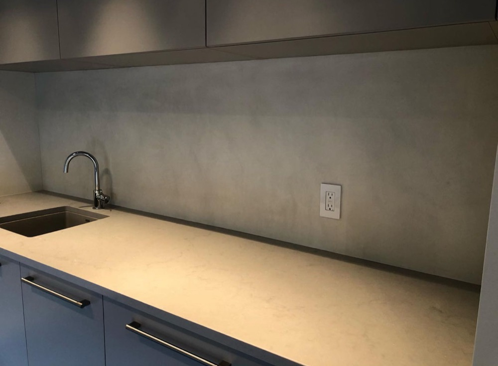

Most of the bathrooms and kitchens we see across the GTA don't actually have a tile problem. They have a tile style problem. The pink-beige ceramic from 1998, the busy mosaic border, the grout that never comes clean no matter how hard you scrub. The tile itself is still firmly stuck to the wall.
The usual fix is to tear it all out. Toronto renovation price guides from HomeStars and RenovationFind put a mid-range full bathroom renovation at $15,000 to $30,000, and a large ensuite at $30,000 to $45,000 or more. Labour is the biggest part of that bill, and a lot of the labour goes into demolition, disposal and rebuilding surfaces that were never really broken.
Microcement over tile skips that part. The old tile stays where it is and becomes the base for a new seamless surface on the walls, the floor, or both. If you've been looking into it, you've probably also read the warnings: grout lines showing through, hairline cracks, coatings peeling. Those failures are real. This guide covers what causes them and how a proper installation prevents them.
Can You Put Microcement Over Tile?
Yes. In most cases microcement can go directly over ceramic, porcelain or stone tile. It's a polymer-modified cement coating applied in thin layers, 2 to 3 mm in total, and it bonds well to a properly prepared tile surface. Because it adds so little thickness, your door clearances, trim and vanity heights stay as they are.
The condition is that the tile underneath has to be sound. Microcement is a finish, not a structural repair. It will look as good as the surface under it allows, and it will last as long as that surface holds still. Your tile is a good candidate if:
- The tiles are firmly bonded. They give a solid click when tapped, not a hollow, drummy sound.
- There are no cracks running in a line across several tiles. That pattern usually means the floor or wall underneath is moving.
- The floor doesn't flex. If it feels springy when you bounce on it, the subfloor needs stiffening first.
- There are no signs of water damage. Watch for loose tiles around the tub, staining on the ceiling below, soft drywall next to the shower, or a musty smell that won't go away.
Tap each tile gently with the handle of a screwdriver. A sharp, solid click means it's well bonded. A dull, hollow sound means that tile has lost its grip. A handful of hollow tiles is normal and we replace them as part of the prep. If a whole section of a shower wall sounds hollow, there's usually water behind it, and that has to be dealt with before anything goes on top.
The Three Ways Microcement Over Tile Fails (and How Each Is Prevented)
When a microcement-over-tile job goes wrong, it almost always fails in one of three ways. Each one comes from a skipped step, not from the material.
1. Grout lines "ghosting" through the finish
What you see: a faint grid of the old tile layout showing through the new surface, especially in raking light from a window or a vanity light.
Why it happens: the grout joints were left open or only skimmed over. As the base coat dries, it shrinks slightly into the joints and leaves a shallow dip over every grout line.
How it's prevented: every joint is filled flush with the tile face and left to cure before any base coat goes on. The base coats are then sanded flat before the decorative layer. Skipping this step saves the installer a day, and it shows for as long as the finish lasts.
2. Hairline cracks along the old joints
What you see: fine straight cracks that follow the tile grid, usually within the first year.
Why it happens: tiles and the wall or floor behind them move very slightly with temperature, humidity and foot traffic. Without reinforcement, that movement concentrates at the joints and telegraphs straight through a thin coating.
How it's prevented: a primer with glass fibre mesh embedded in it goes over the entire surface before the levelling coats. The mesh spreads movement across the whole surface instead of letting it concentrate at one joint. Where the tile already has a flexible, caulked movement joint, for example at the tub edge, in an inside corner or across a large floor, that joint is carried through the microcement rather than bridged over.
3. Peeling, bubbling or delamination
What you see: patches that sound hollow, lift at the edges or bubble, often in the shower where water exposure is highest.
Why it happens: glazed tile is slick by design, and bathroom tile is usually coated in years of soap film and body oil. Microcement put over that never truly bonds. The same thing happens over tiles that were already hollow underneath.
How it's prevented: the tile is degreased and the glaze is mechanically abraded so the primer has something to grip. A bonding primer goes on next. Every tile has been tap-tested beforehand, and the hollow ones have been removed and replaced.
Microcement doesn't fail because it went over tile. It fails when the tile wasn't prepared properly.
How We Apply Microcement Over Tile, Step by Step
This is the full system we use on every over-tile job across Toronto, Mississauga, Vaughan and the rest of the GTA. Each layer dries completely before the next one goes on. We don't rush this, because rushing it causes the failures described above.
- Assessment. It starts with photos on WhatsApp, then an in-person look. We tap-test the tile, check for moisture and movement, and tell you honestly whether your surface is a candidate.
- Protection and prep. Fixtures, trims and shower glass are protected or removed. The tile is degreased, the glaze is abraded, and hollow tiles are replaced. For floor work, the toilet is lifted and later reset on a new seal.
- Joint fill. Every grout line is filled flush and left to cure.
- Anti-crack layer. A bonding primer with glass fibre mesh goes over the whole surface.
- Levelling layer. Microcement base coats are applied with a trowel and sanded flat, which removes any trace of the old tile layout.
- Effect layer. The decorative coat is applied by hand. This sets your final colour and texture, from a soft stone look to a smooth, calm matte.
- Sealing layer. A sealing primer locks in the finish and forms the waterproof barrier.
- Protective topcoat. A two-component protective topcoat goes on last, with at least two coats in showers and other wet areas.
A typical bathroom takes 3 to 5 days. Larger floors and open-plan spaces can take 5 to 10. Before we start, we'll give you a firm date for when the room can be used again, so you can plan around having one bathroom out of service.

Before
AfterWhere It Works, and Where We'd Talk You Out of It
Microcement over tile is a strong fit for most interior surfaces in a GTA home:
- Bathroom walls and tub surrounds. This is the most common job we do. One continuous surface replaces hundreds of grout lines.
- Shower walls. They're fully waterproof once sealed. Shower floors take the most water and wear, so we assess those separately.
- Bathroom, kitchen and entry floors. The finish is hard-wearing, easy to clean and has no grout to stain.
- Kitchen backsplashes. Grease wipes off a sealed, seamless surface instead of soaking into grout.
- Fireplace surrounds, vanity tops and countertops. These are good places for a single statement surface.

We'll be straight with you about the cases where it's the wrong call:
- A shower that's leaking behind the tile. Coating over a leak only moves the failure somewhere else. The leak and any water damage get repaired first.
- A floor over a springy wood subfloor. Deflection will crack any rigid finish, including the tile that's there now. The floor gets stiffened first, or we don't do it.
- Tile that's widely loose or cracked. When most of a wall sounds hollow, removing it is often cheaper than repairing it tile by tile.
- Heavily textured tile such as natural slate. It can be done, but it needs extra levelling coats, which adds time and cost.
- Outdoor tile on porches and steps. Ontario's freeze-thaw cycles destroy tile bonds outdoors. There we remove the tile and use a frost-rated exterior system instead, as in our Vaughan porch case study.
What Microcement Over Tile Costs in Toronto (2026)
Microcement is applied entirely by hand, so labour is most of the price. The rates below come from what GTA microcement installers publish for 2025–2026. They are installed prices, covering prep, mesh, finish coats and sealer.
The price always depends on the job and on the material. Microcement systems vary a lot in cost, and some premium products are expensive to buy. A premium system can bring the installed price to $40–$45 per square foot.
Going rates per square foot
| Surface | 2026 GTA Rate | Notes |
|---|---|---|
| Walls | $20–$35 / sq ft | Most installers quote about $25 |
| Floors | $20–$35 / sq ft | Stairs and tight detail areas sit at the top |
| Shower walls and wet areas | $28–$40 / sq ft | More waterproofing and detail; niches and benches are priced on top |
| Premium microcement systems | $40–$45 / sq ft | Higher-end products cost more to buy; price depends on the job and the material |
| Large projects (1,000+ sq ft) | $20–$22 / sq ft | Volume pricing on open floors and commercial jobs |
| Minimum job | About $3,000 | Common across GTA installers, so small jobs are priced at the minimum |
What typical projects come to
Here's how those rates work out on common jobs using a standard system. The areas are typical for GTA homes; your own square footage and choice of material set the real number, and a premium system will come in higher.
| Project | Estimated Cost | Typical Area |
|---|---|---|
| Kitchen backsplash | $1,600–$3,000 | 30–40 sq ft; small jobs carry a minimum charge |
| Tub or shower surround, walls only | $3,000–$6,500 | 70–90 sq ft, plus any niche |
| Mid-size bathroom, floor + walls | $4,500–$9,000 | 150–200 sq ft (a 5×8 ft main bathroom) |
| Large ensuite with walk-in shower | $7,000–$16,000 | 300–400 sq ft |
| Open kitchen and hallway floor | $10,000–$17,500 | About 500 sq ft |
What the tear-out route costs
Per square foot, microcement isn't cheap. It's in the same range as a good tile job. The savings come from everything around the tile that you no longer pay for:
| Tear-out item | Toronto Cost | Notes |
|---|---|---|
| Removing old tile | $2–$5 / sq ft | Disposal and wall or subfloor repair are often extra |
| New tile, installed | $13–$70 / sq ft | Labour runs $8–$20 / sq ft before the tile itself; wet areas also need new backer board and waterproofing |
| Full bathroom renovation | $15,000–$30,000 | Mid-range; large ensuites run $30,000–$45,000+ |
On a mid-size bathroom, that's the difference between roughly $4,500–$9,000 for microcement and $15,000 or more for a full renovation. It's also a few days with one room out of service instead of several weeks.
What moves the number: how many hollow tiles need replacing, how many corners, niches and edges there are (each one is hand-finished), whether the shower is included, how heavily textured the existing tile is, which microcement product you choose, and whether the job is small enough that the minimum applies.
What's not in it: microcement replaces your surfaces, not your fixtures. If you also want a new vanity, toilet or shower valve, that's a separate cost. Many homeowners pair a microcement bathroom with a new vanity and faucet and still come in well under the cost of a full renovation.
Ask exactly what it includes. A quote well under $20 per square foot usually leaves out the joint fill, the mesh layer or the second topcoat. Those are exactly the steps that prevent ghosting, cracking and peeling, which is why the cheap job can end up costing more.
What It's Like to Live Through
- No demolition. There's no dumpster in the driveway, no tile dust drifting through the house and no week of jackhammer noise.
- Days, not weeks. A typical bathroom takes 3 to 5 days, with a firm back-in-use date.
- Nothing gets taller. At 2 to 3 mm, the new finish keeps doors closing and trim lining up the way they do now.
- Easy upkeep. Sealed microcement wipes clean with mild soap and water, and there's no grout to scrub or reseal.
Why Winter Is the Right Time to Book Interior Work
Outdoor resurfacing in the GTA is limited by temperature. Once the cold sets in, porch and pool deck work stops until spring. Indoor work doesn't depend on the weather. Microcement goes on inside heated homes all winter, so the schedule doesn't get pushed back by rain or cold.
Winter is also when interior calendars have the most room. From April on, our crews are booked with porches, steps and pool decks. Doing the bathroom or kitchen in winter means it's finished before spring, whether you're hosting family or getting ready to list your home.
Questions to Ask Any Contractor Before They Coat Your Tile
- "Do you tap-test every tile, and what happens to the hollow ones?" The right answer is that they're removed and replaced, not coated over.
- "How are the grout joints filled, and how long do they cure?" The answer should be filled flush and fully cured before the base coat.
- "Does mesh go over the whole surface?" Over tile, mesh is not optional.
- "What's the sealer, and how many topcoats go in the shower?" You want a two-component protective topcoat, with at least two coats in wet areas.
- "How do you handle corners and existing movement joints?" They should be carried through, not bridged over.
- "What's the warranty, in writing?" Ours is three years. Ask to see it on paper.
Frequently Asked Questions
Can microcement be applied over bathroom tile?
Yes. In most cases microcement can be applied directly over ceramic, porcelain or stone tile, as long as the tile is firmly bonded and there is no water damage behind it. Hollow tiles are replaced, the grout joints are filled flush, a bonding primer and glass fibre mesh go on, and the microcement is built up and sealed over the top.
Will grout lines show through microcement?
Not if the joints are filled properly. Grout lines show through when they are left unfilled or only skimmed, so the base coat sinks into them as it dries. The joints need to be filled flush and allowed to cure before the base coats go on, and the base coats are sanded flat before the finish coat.
Is microcement over tile waterproof in a shower?
Yes, once it is sealed. The waterproofing comes from the sealing system: a sealing primer followed by a two-component protective topcoat, with at least two topcoats in a shower. Microcement will not fix a shower that is already leaking behind the tile. Any existing leak or water damage has to be repaired first.
How much does microcement over tile cost in Toronto?
GTA microcement installers typically charge $20 to $35 per square foot for walls and floors, with most quoting around $25, and $28 to $40 per square foot for shower walls. Premium microcement systems cost more and can reach $40 to $45 per square foot, so the price depends on the job and the material. Many installers have a minimum job of about $3,000. With a standard system that works out to roughly $3,000 to $6,500 for a tub or shower surround, $4,500 to $9,000 for a mid-size bathroom floor and walls, and $7,000 to $16,000 for a large ensuite. Toronto price guides put a mid-range full bathroom renovation at $15,000 to $30,000.
How long does it take to microcement over tile?
A typical bathroom takes 3 to 5 days, because each layer has to dry fully before the next one goes on. Larger floors can take 5 to 10 days. There is no demolition, so there is no tear-out or disposal time added to the schedule.
The Short Answer
If your tile is dated but solid, you don't need to tear it out. Microcement over tile gives you a seamless, modern bathroom or kitchen in days, for a fraction of the cost of a full renovation. The result depends almost entirely on the prep: tap-testing, joint filling, mesh and a proper sealer. Choose your installer based on how they handle those steps.
Artisan Coat has been applying microcement across Toronto, Mississauga, Brampton, Vaughan, Oakville and the wider GTA for years. If your tile isn't a good candidate, we'll tell you before you spend anything. You can read more about the system on our microcement page.